mrm citation
highlights of the key elements and interactions that enable the core functionalities
The add-in for Microsoft® Word allows users to easily insert references from their Mendeley library into their Word documents, change citation style and generate a bibliography - all without leaving their document.
Overview
Mendeley Cite is a free, simple add-in for Microsoft Word versions 2016 and above, with the Microsoft Word app for iPad® and with Microsoft Word Online.
It allows users to easily:
Search for references in their Mendeley library and insert them into the document they are working on.
Select and insert individual or multiple references at once.
Create a bibliography of all the references they have cited.
Change to any of the preferred citation styles in just a few clicks.
Cite without having Mendeley Reference Manager open or even installed - once they sign in to Mendeley Cite, their Mendeley library is downloaded from the cloud.
Keep sight of their Word document at all times - Mendeley Cite opens as a separate panel in Word alongside their document window, not over it.
Accessing the plugin
Once Mendeley Cite is installed the add-in can be accessed via the 'References' tab on the Ribbon in Word. Selecting 'Mendeley Cite' will initiate the add-in in the right-hand side panel, where it will show the sign-in page.
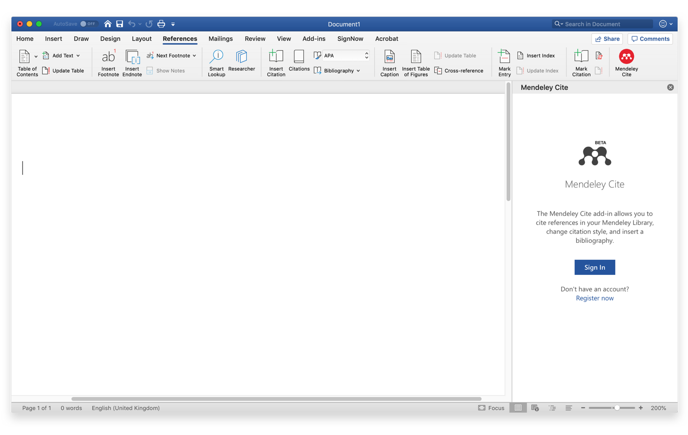Once the user selects 'Sign in' the sign-in page will appear. They will need to sign into their Mendeley account to access their library in Mendeley Cite or register if they don't have an account.
Once they have signed in they will see their library under the 'References' tab in Mendeley Cite.
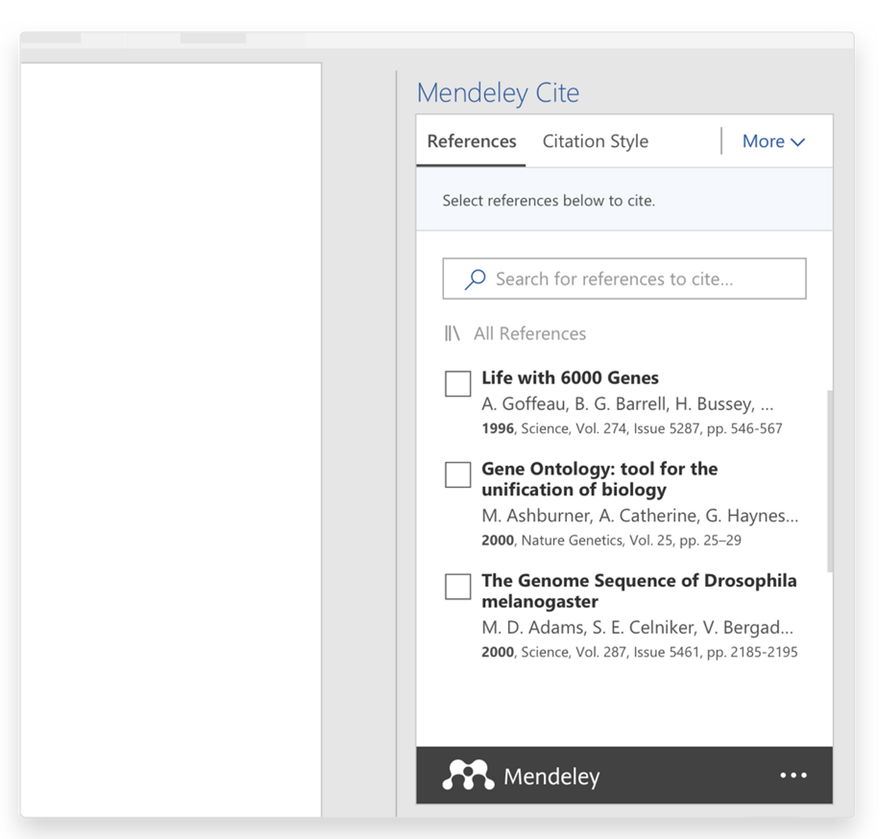Inserting a citation
To add a reference to a paper the users can point the cursor to the location they wish to insert the citation and from the 'References' tab select any of the references they want to add. Clicking the 'Insert citation' button will automatically update the citation with the correct formatting and add it to the document.
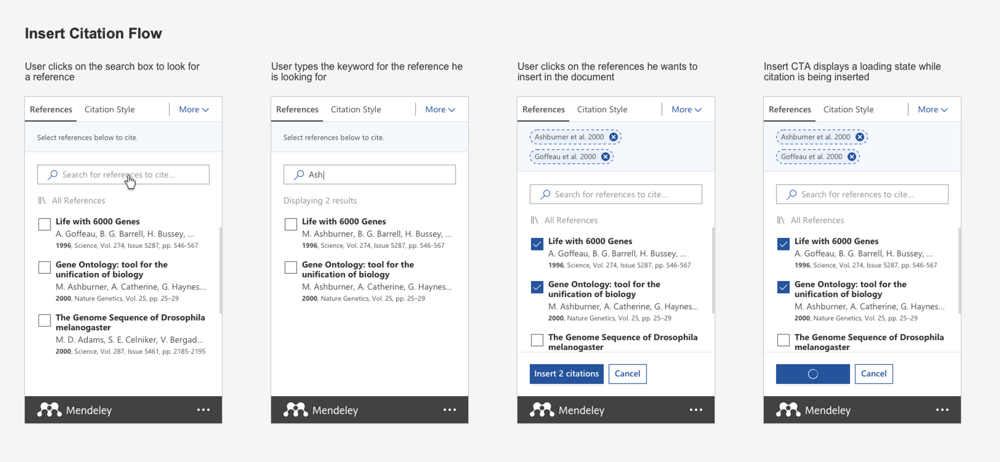 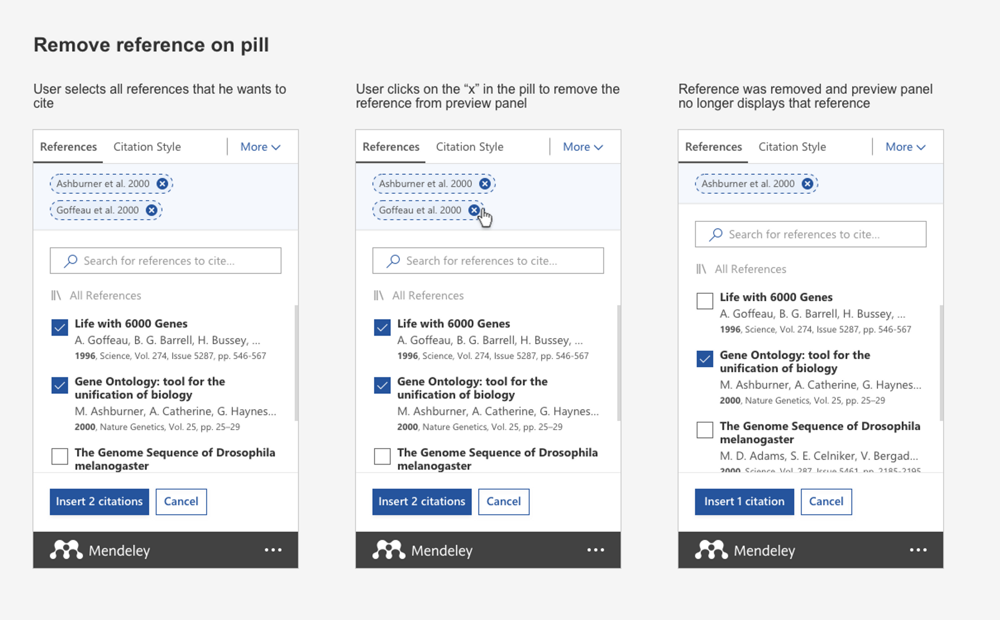Editing a reference in a citation
The users can edit the attributes of any citations they have already created by simply selecting it to open the edit panel.
From there they can select the reference pill they wish to edit to open the attributes panel.
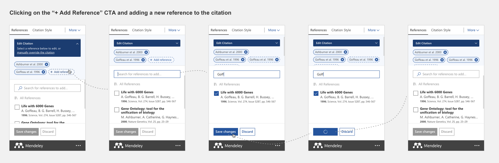Within the attributes panel, there are various options for editing the reference. They can add values to specific reference attributes (such as page numbers) and provide a prefix/suffix. They also have the option to suppress the author's name.
Any edits they make to a specific citation will be applied within the document, depending on the pre-selected citation style.
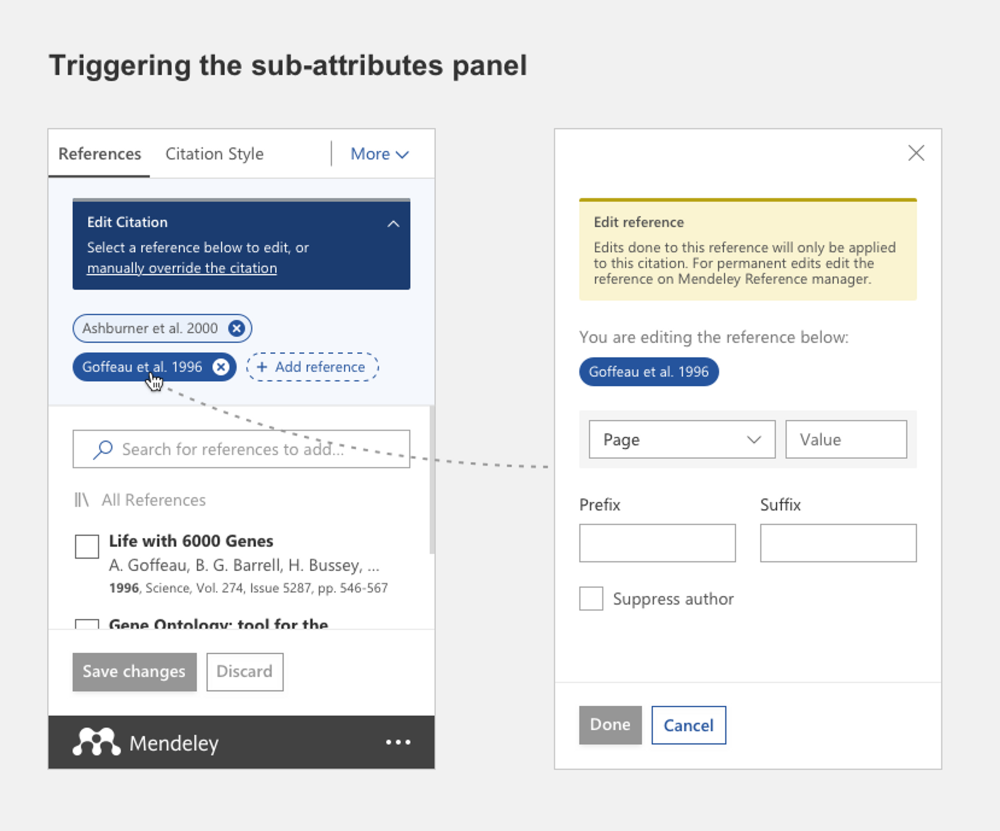Creating a bibliography
After inserting one or more citations the users can now automatically generate a bibliography of all the cited references. They can position the cursor where they want the bibliography to appear in their document and select the **'More'** menu and from the dropdown menu the 'Insert Bibliography' button.
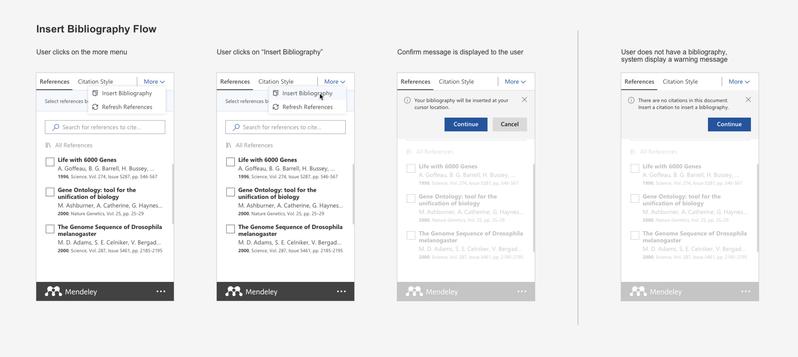The plugin will style all citations and bibliography according to the preferred citation style. The bibliography will automatically reorder and restructure itself every time a new citation is added. Mendeley Cite will also automatically renumber the items if a new citation is inserted earlier in the document.
Choosing and changing citation styles
Citation styles determine how citations and bibliographies are displayed within a paper. If the users need to change the style to meet different specifications they can navigate to the 'Citation Style' tab which displays a list of all the citation styles they currently have installed.
By default, when they first access Mendeley Cite with their account, the selected style will be APA 6th edition and the tab will display the top 10 most common citation styles. They can change the style by selecting any of the displayed styles and then selecting **'Update citation style'**.
The bibliography will also be automatically reformatted according to the new style.
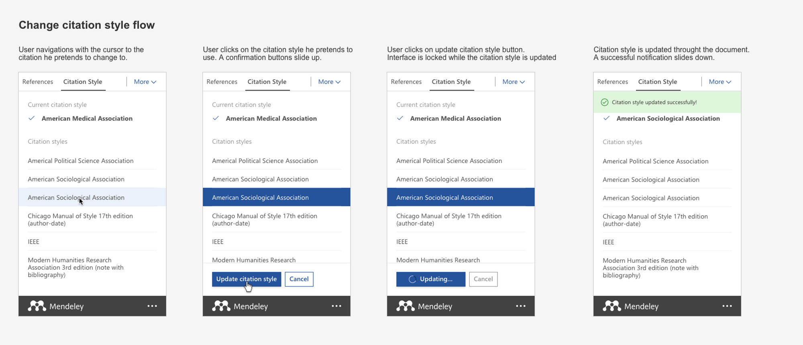Mendeley Cite comes with a number of common styles installed, but the users can search for and install any other styles as needed. Selecting 'Select another style...'' will open a new window from where they can use the search bar to find the style that they wish to use and click 'Update citation style' to install it. The top 10 list will automatically update with the new selections in alphabetical order.
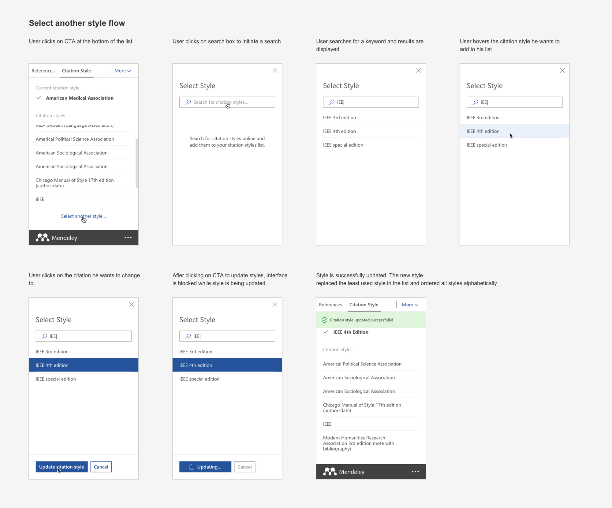Using a custom citation style
From the 'Citation Style' tab the users can also upload their own custom styles by clicking on the 'Select another style...' link to load the citation style search window. At the bottom of the window, they can select the 'Add custom style' link to open the custom citation style panel.
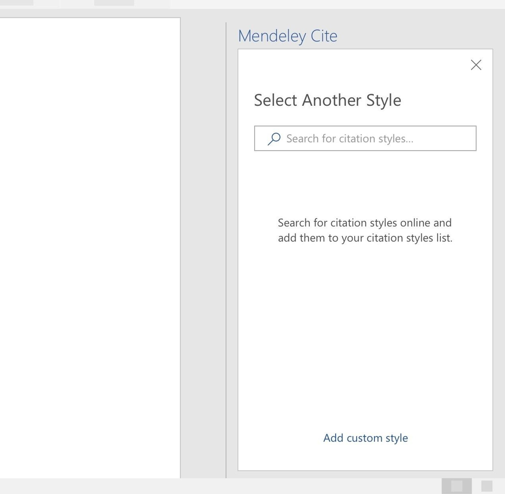 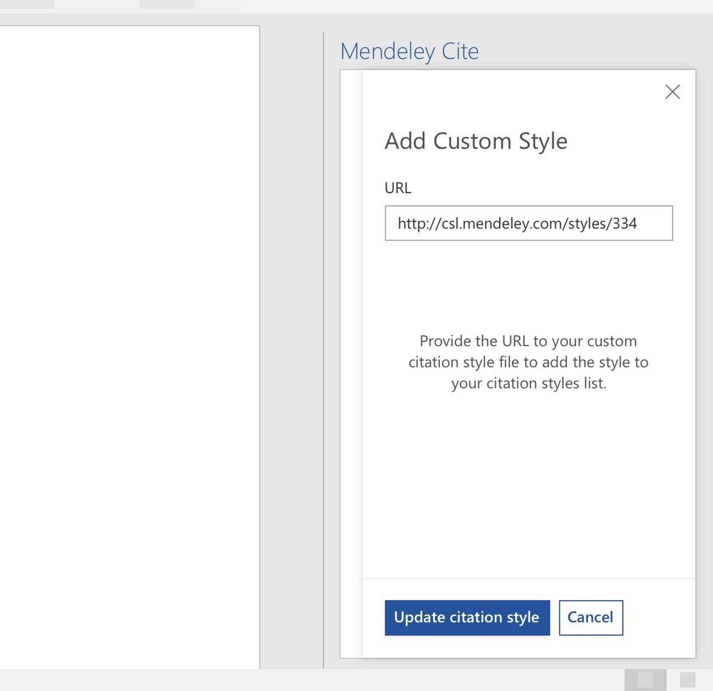Refreshing references
To refresh the references in the document and update them with any changes they have made to their library the users can select the 'More' menu and then the 'Refresh References' button from the dropdown menu.
Mendeley Cite will update all references, as well as the bibliography, with any changes made in the library.
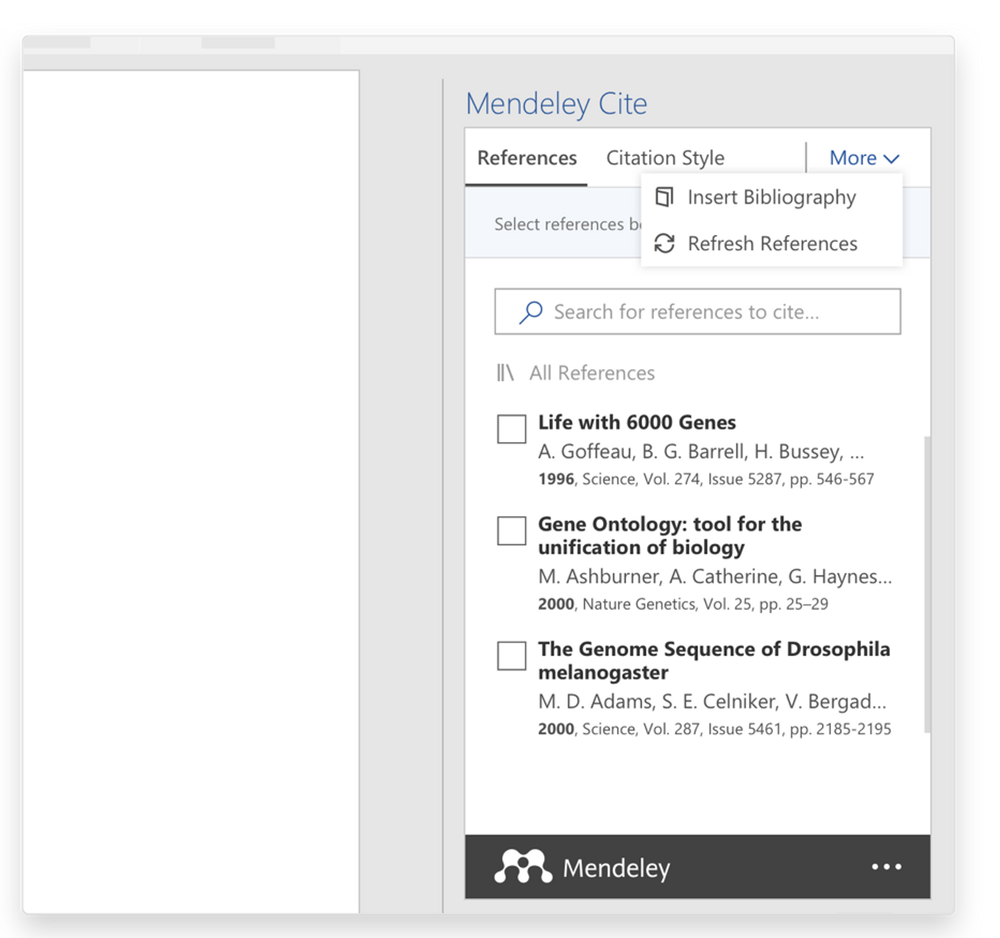Manually overriding a citation
To make manual changes to a citation they have created the users can click it to open the edit panel and select the manual override option box above the reference pills to enter the manual override mode.
Within the manual override panel, they will see a text box containing the original citation default text. They can now change the values by typing in the text box and editing the default text and selecting 'Save changes' to apply the changes to the document. To cancel any changes they can simply select 'Close'.
To undo any manual changes after they are saved, the users can reselect the citation to open the manual override panel and then select the 'Revert to default' button to go back to the original value.
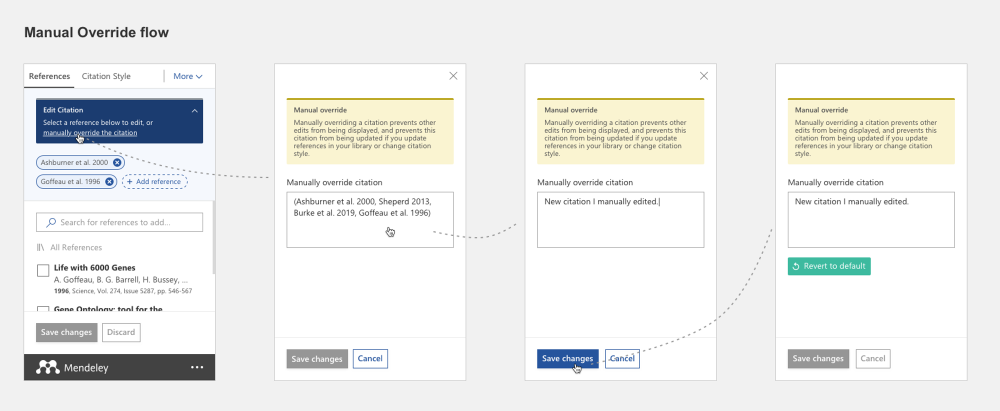Browsing by collections and groups
The users can search for references in a specific location by clicking on the selection box above the search bar to access the collections and groups from their Mendeley library and select any of them.
The 'All References' collection is selected by default when Mendeley Cite is launched.
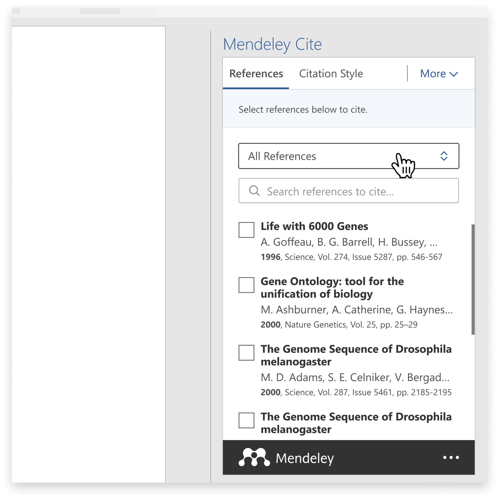
Every time a Collection or Group is selected, its name will show inside the selection box above the search bar in the 'References' tab. All references in the Collection or Group folder selected will be listed below the search bar and can be cited in the word document.